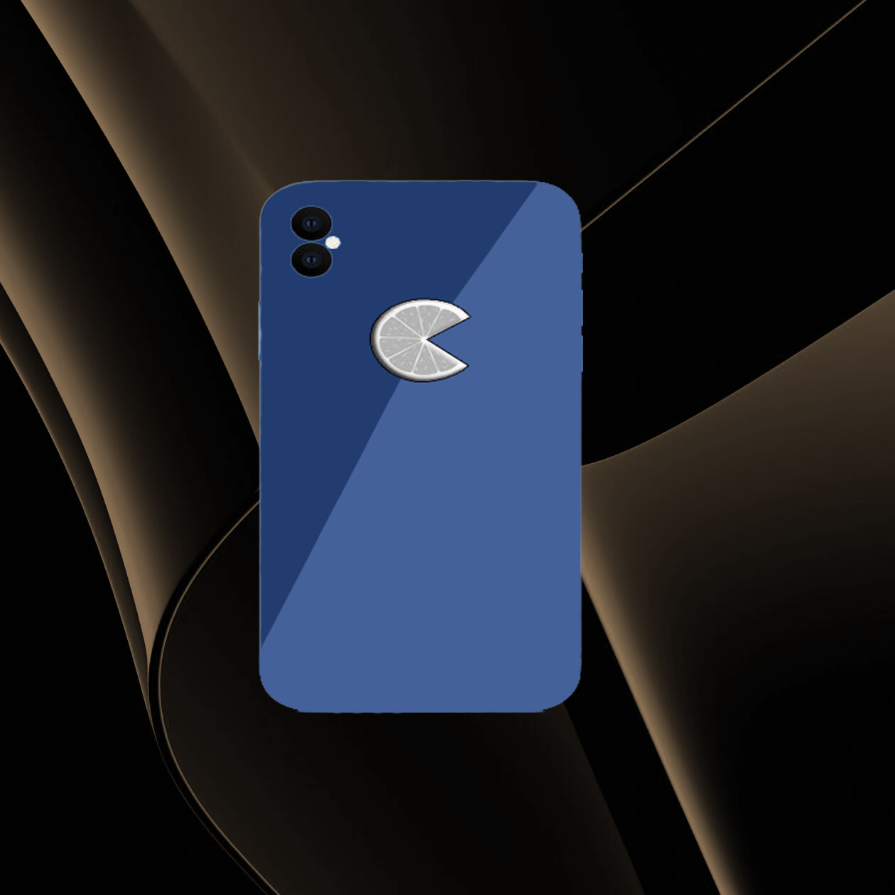
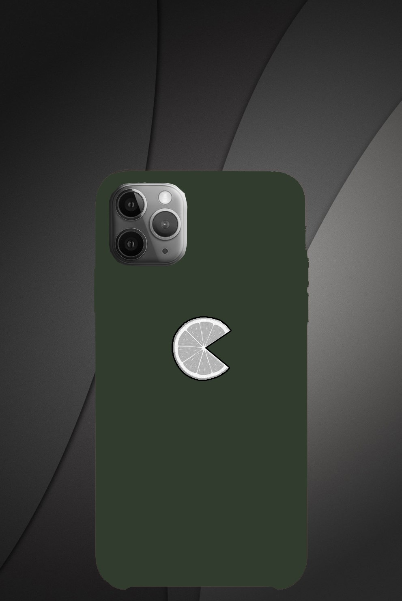

Desarrollada con alta tecnología, la línea iFruit vino para revolucionar el mercado de los smartphones.
Usando la nueva familia de chipsets Thunder 7, el nuevo iFruit es la elección perfecta para cualquiera que busque.
agilidad en el día a día. Con el fin de mejorar o controlar la salud de nuestros usuarios, TODO iFruit 5th Gen, incluidas las aplicaciones: iNutri e iGym

iFruit XR: hasta 3 veces más rápido que un celular normal
El nuevo iFruit XR, llega con la propuesta de ser el mejor entre los mejores, con un diseño increíble,
y el conjunto de chips de última generación, este teléfono hace llorar a cualquier manzana
Especificaciones:
- Armazenamento: 64GB
- Memória RAM: 8GB
- Chipset: Thunder 5.1
- Câmera Traseira: 16MP Fx 2.0
- Câmera Frontal: 8MP Fx 1.6
- Tela: IPS 75Hz

iFruit XS: por qué bloquearse no es una opción
iFruit XS no necesita presentación, con un diseño elegante y un sistema optimizado, ¡esta es la opción perfecta para aquellos que odian quedarse quietos!
Especificaciones:
- Armazenamento: 128GB
- Memória RAM: 8GB
- Chipset: Thunder 5.2 with Neural Engine
- Câmera Frontal: 12MP Fx 1.6
- Câmera Traseira:
12MP Fx 2.0
MP Fx 1.6
- Tela: OLED 90Hz

iFruit X Pro: lo mejor de lo mejor
El iFruit X Pro llegó al mercado para ser el mejor entre todos los teléfonos inteligentes en la actualidad, con un hardware potente y un diseño refinado, el iFruit X Pro es perfecto para aquellos que buscan una experiencia premium.
Especificaciones:
- Armazenamento: 256GB
- Memória RAM: 16GB
- Chipset: Thunder 5.3 with Neural Engine 2.0
- Câmera Frontal: 16MP Fx 2.0
- Câmera Traseira:
48MP Fx 2.3
12MP Fz 1.8
8 MP Fx 1.6 - Macro
- Tela: Super AMOLED 120Hz